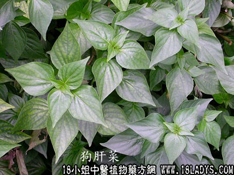

(本文解释权归中药材天地网兄弟站-18小姐中医植物药方网所有,如需转载请注明出处)

别名：青蛇仔、九干菜。
植物名：狗肝菜。
生长环境：本品为一年生或二年生草本，广州常见的野草，多生于旷地上，堤岸上较潮湿荫蔽地。
分布：广东各地均有，我国南部地区常见。
入药部分：全草。
采集期：全年有产，夏秋较多。
自采地点：基边，田边，荒地等。
性味：性凉、味甘淡。
功能：清热解暑，清肝火。
主治、用量和用法：①感暑大热：生用4两至1斤，加清水久煎服。或干用1至1两。清水煎服；②癍痧热症：用法同上；③眼热：用法同上；④出标蛇：用法同上。
验方1（治感冒发热方）：狗肝草（干）2两，天香炉1两、淡竹叶1两、海金沙藤1两、山芝麻1两，清水五碗，煎成二碗，分二次服。
（方解）方中山芝麻有清热解表之功，天香炉、九干菜、淡竹叶、海金沙藤有清热之效，在热病初起有效。
（方歌）热不恶寒而口渴，山芝麻煎功效确。竹叶金沙天香炉，狗肝菜力能解索。
验方2（治眼热方）：生狗肝菜4两、黄豆2两，清水五碗，煎成一碗温服。
（方解）方中狗肝菜清肝热、黄豆清肺热、二味合用，对肝腑受热而致眼热病者，颇为稳当。
（方歌）生狗肝菜用四两，黄豆加来共六两。清泉五碗煎为一，解除肝肺眼热恙。
参考资料：《广州中医验方第一集》小梅卫生所介绍：以狗肝菜合剂，治湿热下痢，两服三至五天即愈。处方：狗肝菜3两，簕苋菜头1两，火炭母8钱，绿豆4两，煎服。
(本文解释权归中药材天地网兄弟站-18小姐中医植物药方网所有,如需转载请注明出处)